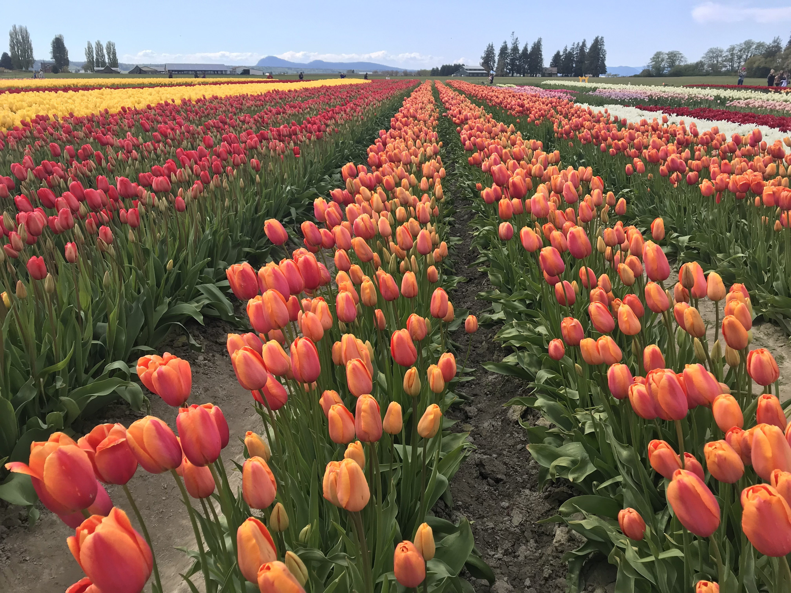

My Life

Part designer
- UI design
- UX design
- Front-end dev
- "Making it pop"
Part Coder
- Back-end dev
- HTML/CSS
- JavaScript
- Python (kinda)
- TypeScript (kinda)
- Angular
My story
My early fascination with computers, sparked by my grandfather who gifted me my first computer at the age of 5, has been a driving force throughout my life. The thrill of exploring its intricacies lingered as I developed a passion for gaming, both online and offline.
This interest prompted me to enroll in computer classes during elementary school, a trajectory that continued into middle and high school. It was in middle school that I took my first coding class, a pivotal moment that ignited my coding journey. As I progressed through high school, I solidified my decision to pursue a career in designing and coding websites.
Read My Story